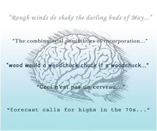

")
")
Ingeniería lingüística
Descripción:
La ingeniería lingüística tiene por objetivo facilitar la comunicación del hombre con la máquina, e incluso entre máquinas. Dicha comunicación es fundamental para la Web Semántica, donde la representación del conocimiento se lleva a cabo mediante ontologías, que pueden ser compartidas entre usuarios y ordenadores. La ingeniería lingüística se nutre de diferentes disciplinas, como la terminología, la lingüística computacional, la traducción y otras disciplinas relacionadas con la informática y la lengua y se orienta a aplicaciones diversas que van desde la generación de textos, la localización de ontologías, pasando por la recuperación de información, la traducción automática o asistida, los analizadores sintácticos, los gestores de terminología o la anotación lingüística basada en ontologías, por mencionar solo algunas de estas posibles aplicaciones.. A este respecto, uno de los retos más atrayentes es el hecho de tener que adaptar las ontologías a usuarios de diferentes lenguas y culturas al tiempo que se trata de preservar la generalidad del modelo. Otro tema candente en este panorama se encuentra en la necesidad constante de mejorar los métodos de extracción de información y análisis de contenido multilingüe mediante nuevos enfoques que permitan combinar y explotar recursos lingüísticos disponibles en la web (lexicones, corpora, servicios de traducción, etc.), o en la web de datos enlazados (linked data) con otros sistemas de carácter estadístico.
Proyectos
actuales
LIDER
El proyecto europeo LIDER (610782) tiene como objetivo sentar las bases para el establecimiento de un nuevo ecosistema de recursos lingüísticos abiertos (lexicones, diccionarios, corpora, metadatos léxicos y sintácticos, etc.) basado en datos abiertos enlazados (Linked Open Data o LOD,en sus siglas en inglés). Con ello se pretende crear una nube de datos lingüísticos enlazados (Linguistic Linked Data o LLD, en sus siglas en inglés) que contribuya a realizar tareas de análisis y extracción de contenidos de datos multimedia no estructurados y en distintas lenguas.
Para subscribirse a la lista Esta dirección electrónica esta protegida contra spam bots. Necesita activar JavaScript para visualizarla , vaya al sitio http://www.lider-project.eu/get-involved
Principales resultados de proyectos anteriores:
LEMON
Dentro del proyecto europeo Monnet, Multilingual Ontologies for Networked Knowledge (FP7-248458) participamos en la creación de un modelo para el enriquecimiento de ontologías con información lingüística multilingüe llamado lemon, (Lexical Model for Ontologies). El modelo lemonpretende ser conciso, descriptivo (no prescriptivo), modular (módulo de información morfológica, módulo de información sintáctica, módulo de variación terminológica y traducción, etc.), y está basado en RDF. Se apoya en trabajos anteriores de los miembros de Monnet, como los modelos LexInfo y LIR, al tiempo que utiliza también el estándar ISO LMF. Para más información http://lemon-model.net/
Este modelo se ha tomado como base para la propuesta de un modelo estándar de representación lingüística en la web semántica en el marco del grupo “OntoLex – Ontology Lexica Community Group” del W3C. http://www.w3.org/community/ontolex/
Referencias
- Montiel-Ponsoda, E. J. McCrae, G. Aguado-de-Cea and J. Gracia, 2013. Multilingual variation in the context of Linked data, Proceedings of the Xth Conference on Terminology and Artificial Intelligence, Paris, pp.19-26.
- Aguado-de-Cea, G. and E. Montiel-Ponsoda. 2012. Term variants in ontologies Proceedings of the XXX Congreso Internacional de AESLA 2012, 436-443
- Montiel-Ponsoda, E., J. Gracia, G. Aguado-de-Cea and Gómez-Pérez, A. 2011. Representing translations on the semantic web, 2nd Workshop on the Multilingual Semantic Web, Bonn, Germany. 25-37.
- Aguado de Cea, G., E. Montiel-Ponsoda and I. Alvarez de Mon. 2009. From Linguistic Patterns to Ontology Structures, 8th International Conference on Terminology and Artificial Intelligence (TIA 2009), pp. 1-12
- Gracia,J., E. Montiel-Ponsoda, P. Cimiano, A. Gómez-Pérez, P. Buitelaar, and J. McCrae, "Challenges for the multilingual web of data," Journal of Web Semantics, vol. 11, pp. 63-71, Mar. 2012. Disponible: http://oa.upm.es/8848/1/Multiling.pdf
- Cimiano. P., E. Montiel-Ponsoda, P. Buitelaar, M. , Espinoza and A.Gómez-Pérez, “A Note on Ontology Localization, Applied Ontology 5(2):127-137 (2010)
LIR
En el proyecto NeOn (FP6-027595) diseñamos un modelo de representación lingüística multilingüe, LIR (Linguistic Information Repository), en sus siglas inglesas, que permite capturar conocimiento lingüístico necesario para la localización de ontologías (principalmente información terminológica y de traducción). Asimismo, mediante la herramienta LabelTranslator, desarrollada también dentro del grupo, el usuario puede traducir a una lengua, automática o semi-automáticamente, la ontología y ver toda la información lingüística asociada a cada término de la ontología (las lenguas soportadas por la herramienta son inglés, español y alemán). También desarrollamos patrones léxico-sintácticos multilingües para el modelado de ontologías, integrando el modelo léxico construccional (LCM, en sus siglas en inglés) de Mairal y Ruiz de Mendoza (http://www.lexicom.es/drupal/) con los patrones de diseño ontológico (http://ontologydesignpatterns.org/)
Referencias
- Montiel-Ponsoda, E., G. Aguado-de-Cea, A. Gómez-Pérez and W. Peters. 2011. Enriching Ontologies with Multilingual Information, Natural Language Engineering 17(1), 283-309
- Montiel-Ponsoda, E., and G. Aguado-de-Cea. 2011. Using natural language patterns for the development of ontologies, en Researching Specialized Languages, John Benjamins Publishing Company,211-230.
- Aguado-de-Cea, G. , A. Gómez-Pérez, E. Montiel-Ponsoda, and MC. Suárez-Figueroa. 2008. Natural Language-based Approach for helping in the reuse of ontology design patterns, Lecture Notes in Computer Science, 32-47
- Ontology Localization, Ontology Engineering in a Networked World, 171-192
- Suárez-Figueroa, M. C. , G. Aguado-de-Cea, and A. Gómez-Pérez. 2013. Lights and Shadows in Creating a Glossary about Ontology Engineering, Terminology, 19(2), 202-236.
OntoTag
Dentro del proyecto Plan-H-Semweb, (Ref. 14286) se diseñó un modelo de anotación que integraba anotaciones lingüísticas en un modelo ontológico (OntoTag).
Referencias
- Aguado de Cea, G., I. Alvarez de Mon and A. Pareja-Lora Una visión interdisciplinar de la anotación semántica, en Terminología y sociedad del conocimiento, Peter Lang, pp. 219-254
- Aguado de Cea, G., I. Alvarez de Mon, A. Gómez-Pérez, and A. Pareja-Lora. 2004.OntoTag's Linguistic Ontologies: Improving Semantic Web Annotations for a Better Language Understanding in Machines, International Conference on Information Technology: Codding and Computing, IEEE Computer Society, pp.124-128
- Aguado de Cea, G., I. Alvarez de Mon, A. and A. Pareja-Lora. 2002. RDF/S)XML Linguistic Annotation of Semantic Web Pages, Workshop on NLP-XML, 2002, en Computational Linguistics, Coling 2002, pp. 85-92
Ontogeneration
En el proyecto Ontogeneration, http://www.nlg-wiki.org/systems/Ontogeneration, se generaron textos partiendo de una ontología de elementos químicos.
Referencias
- Aguado, G., Bañón, A., Bateman, J. A., Bernardos, S., Fernández, M., & Gómez-Pérez, A., et al. (1998). ONTOGENERATION: Reusing domain and linguistic ontologies for Spanish text generation. Proceedings of the ECAI'98 Workshop on Applications of Ontologies and Problem Solving Methods, Brighton, U.K.
- Galindo, M. S. B., and Aguado de Cea, G. (2001). Adapting the Generalized Upper Model to Spanish. Proceedings of the Euroconference Recent Advances in Natural Language Processing (RANLP-2001), Tzigov, Bulgaria.
- Galindo, M. S. B., and G. Aguado de Cea (2004) A New Approach in Building a Corpus for Natural Language Generation System, LNCS- Lecture Notes in Computer Science, 216-225.
Colaboraciones con empresas
Microsoft
Se participó en la localización del MSDN Visual Studio 2012 al español. http://blogs.msdn.com/b/devcontentloc/archive/2013/08/02/featured-partner-of-the-week-technical-university-of-madrid.aspx
Referencias
- Aguado de Cea, G., M.A. Barrios, S. Bernardos, I. Campanella, E. Montiel-Ponsoda, V. Rodríguez & O. Muñoz. 2013. Análisis de sentimientos en un corpus de redes sociales. XXX Congreso de AESLA, La Laguna. (en prensa)
Otros resultados
Social Detective
Social Detective es un sistema que detecta emociones y sentimientos en tweets utilizando técnicas estadísticas y lingüísticas.
Badele3000
Badele3000 consiste en una base de datos léxica que contiene información sobre los 3000 sustantivos más frecuentes en el español (de España). Este recurso computacional tiene como base teórica la teoría sentido-texto (TST) de Igor Mel’čuk. La información lingüística que contiene Badele es muy útil para el estudio de las colocaciones del español, así como para la enseñanza de esta lengua. Por otro lado, al estar disponible en un formato pensado para su uso computacional, puede emplearse en cualquier aplicación de procesamiento de lenguaje natural que requiera de un recurso léxico, como en traducción automática, generación de lenguaje natural y desambiguación. En la actualidad se está trabajando en la herramienta para que pueda almacenar y manejar información de varias lenguas, tanto de forma individual como simultáneamente. De este modo, los usos señalados anteriormente se podrían extender a otras lenguas.
Referencias
- Barrios, M. A. 2010. “El dominio de la funciones léxicas en el marco de la Teoría Sentido-Texto”. Estudios de Lingüística del Español (ELiEs), 30.
- Barrios, M. A. Bernardos, S. 2007. BaDELE.3000: An implementation of the lexical inheritance principle. En Gerdes, Kim; Reuther, Tilmann; Wanner, Leo (eds.). Meaning-Text Theory Proceedings of the 3rd International Conference on Meaning-Text Theory. pp. 97-106.
- Bernardos, Mª S. y Barrios, M.A. 2008. “Data model for a lexical resource based on lexical functions”. Research in Computing Science, vol. 27.
Calíope
Calíope es una aplicación web que gestiona dos recursos: un corpus de textos correspondientes a distintos géneros profesionales y académicos del ámbito informático, tanto en inglés como en español, y un glosario de términos en ambas lenguas. Cuenta con diferentes prestaciones: listado de palabras y su frecuencia, búsqueda de concordancias y de coocurrencias de varios términos, filtrado de textos, entre otras.
Referencias
- Bernardos, Mª S. y Aguadode Cea, G. 2013. “Integración de un corpus de textos bilingüe
y un glosario del campo de la informática”. Actas del XXX Congreso de la Asociación de Lingüística aplicada. La Laguna. Tenerife.

Created under Creative Commons License - 2015 OEG.